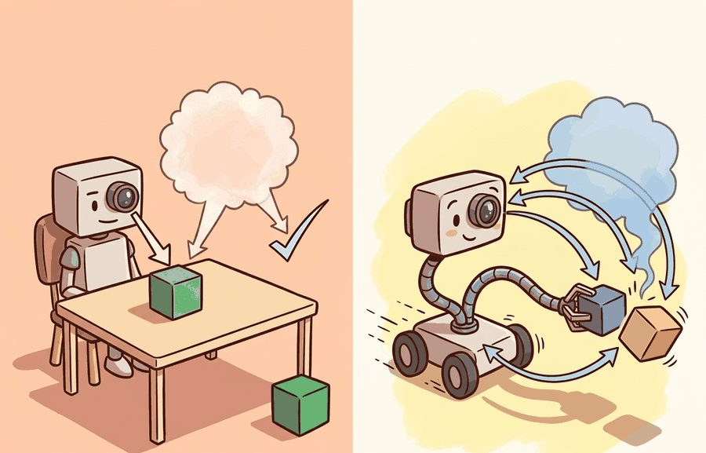
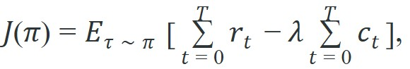
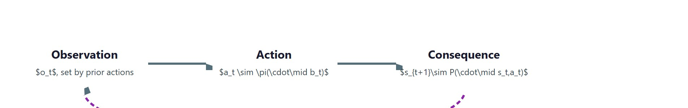

"A classifier answers a question once. An embodied agent answers, then inherits the consequences."
Section 1.1

The closed-loop formalism introduced here is grounded in section 2.6, which defines the controlled Markov process and observation model precisely. The compounding-error problem resurfaces in section 21.2, where behavior cloning is treated in full, and section 21.3, which introduces DAgger as the canonical on-policy correction. Evaluation tools for measuring closed-loop performance appear in section 10.1 alongside the Gymnasium episode contract.
A robot arm misreads a grasp angle by three degrees. In a static model, that is a bad prediction and the episode ends. In a real kitchen, the arm nudges the cup, the cup slides to a new position, and every subsequent grasp attempt now starts from wrong assumptions. One error rewrote the world. This feedback loop is why embodied AI demands a fundamentally different formalism right now: robots, drones, and surgical tools are leaving controlled labs and entering environments where errors compound in real time. Here you will see exactly why the shift from a fixed-distribution predictor to a closed-loop policy changes almost every algorithm, evaluation method, and failure mode covered in this book.
Ask a static classifier the same question a thousand times and it gives the same answer to the same fixed test set; ask an embodied agent once, and its answer rewrites the next question it will ever see. That difference starts at the level of the formal object. A static predictor learns a function $f(x)=y$. The input $x$ is drawn from a fixed distribution $\mathcal{D}$, the output is scored by a loss $\ell(f(x),y)$, and the example ends. Crucially, $\mathcal{D}$ does not depend on $f$: the test set is the same whether the model is good or bad. A predictor can be wrong and remain indifferent to the consequences; an agent that is wrong inherits a world shaped by its mistake.
An embodied agent acts inside a controlled Markov process. At step $t$ it receives an observation $o_t$, maintains a belief or internal state $b_t$ (introduced here as notation; the next section explains why it is needed and how it is updated), chooses an action $a_t \sim \pi(\cdot \mid b_t)$, and the world transitions $s_{t+1} \sim P(\cdot \mid s_t, a_t)$, emitting $o_{t+1}$. The unit of analysis is the trajectory $\tau = (o_0, a_0, o_1, a_1, \ldots, o_T)$, and the score is a functional of the policy,

where $r_t$ measures task progress, $c_t$ measures cost such as collision risk, energy, or recovery effort, and $\lambda$ encodes how much the evaluator penalizes unsafe or expensive behavior.
So far: a static predictor learns a fixed function scored once on a fixed distribution, while an embodied agent generates a trajectory of observations and actions and is scored by the functional $J(\pi)$, which already depends on the policy itself. The next question is what the agent needs internally to choose those actions well.
The belief $b_t$ exists because a physical robot's sensors never reveal the full world state. A depth camera gives a point cloud, not joint torques; an inertial measurement unit (IMU) gives acceleration, not foot contact forces. Collapse these partial signals into a single action without memory and you discard causal history the policy needs: whether a gripper is already loaded, whether a door was just pushed open, whether a prior slip shifted the object. Belief tracks that history so the policy can act on what the world is, not just what one sensor frame shows. Without it, a robot handling an occluded object would behave identically whether the object had moved one second ago or not.
Mechanically, $b_{t+1} = \text{encode}(b_t, a_t, o_{t+1})$ fuses three inputs: the prior belief, the action just taken (which predicts the expected next state), and the new observation (which corrects for prediction error). A recurrent network hidden state, a Kalman filter covariance update, or a particle set reweight implements this, depending on how nonlinear the dynamics are. The key point is that the action $a_t$ enters the update: the robot's own movement is evidence about where the world now is.
Think of stirring a pot of soup on a dark stove. You cannot see the bottom of the pot, so you build a mental picture of where the vegetables are from what you felt on the last stir, how far you moved the spoon, and what resistance you feel now. Your own action (the stir) is not noise to filter out; it is the primary reason your estimate of the soup's contents changes at all. Belief update works the same way: the agent's movement is not just a side effect but a direct input that narrows uncertainty about where things are.
The decisive term is the subscript on the expectation: $\tau \sim \pi$. The distribution of states the agent is judged on is produced by the agent. Improve the policy and you change the test set. This single coupling, absent from $f(x)=y$, is the source of distribution shift, compounding error, exploration cost, and the need for closed-loop evaluation. The practical test for which formalism applies is whether the system's own output can change the distribution of its future inputs: a spam filter, an X-ray triage classifier, or a recommendation ranker scored on a fixed held-out set stays a static predictor even when deployed, because tomorrow's email or X-ray does not depend on today's classification; a robot arm, a drone, or a dialogue agent whose action shifts the next observation requires the closed-loop treatment developed in this section, regardless of whether it has a physical body. Figure 1.1 traces this coupling visually: an action's consequence becomes the next observation, so the evaluation distribution is generated by the very policy under evaluation. Figure 1.1A above shows the downstream effect, where a single prediction error stops at the output in a static model but propagates into a state change that the next observation inherits in the closed loop.
Input: policy $\pi_\theta$ with parameters $\theta$, environment with transition kernel $P$, reward $r$, cost $c$, penalty weight $\lambda$, horizon $T$
Output: trajectory $\tau = (o_0, a_0, o_1, a_1, \ldots, o_T)$, return estimate $\hat{J}(\pi_\theta)$
Trace the cycle with a tiny one-dimensional reaching task. The robot must move its hand to position $x=10$; reward is negative distance, cost is $c_t=0$ here, $\lambda=0$, horizon $T=3$. The policy is $a_t = 0.5\,(10 - b_t)$ (move halfway toward the goal estimate) and the belief simply tracks the latest observation, $b_{t+1}=o_{t+1}$. The world is $x_{t+1}=x_t+a_t$ with a small drift of $+0.4$ per step.
Step 0: $o_0=0$, so $b_0=0$. Action $a_0=0.5(10-0)=5.0$. World: $x_1 = 0 + 5.0 + 0.4 = 5.4$, so $o_1=5.4$, $r_0=-(10-5.4)=-4.6$. Update $b_1=5.4$.
Step 1: Action $a_1=0.5(10-5.4)=2.3$. World: $x_2 = 5.4 + 2.3 + 0.4 = 8.1$, so $o_2=8.1$, $r_1=-1.9$. Update $b_2=8.1$.
Step 2: Action $a_2=0.5(10-8.1)=0.95$. World: $x_3 = 8.1 + 0.95 + 0.4 = 9.45$, so $o_3=9.45$, $r_2=-0.55$. Update $b_3=9.45$.
Return $\hat{J} = -4.6 - 1.9 - 0.55 = -7.05$. Notice that each action was computed from a belief that was itself the consequence of the previous action: change the policy gain from $0.5$ to $0.8$ and every later observation moves, because $\tau \sim \pi$. That coupling is exactly what a static $f(x)=y$ trace would never show.

The practical consequence of $\tau \sim \pi$ is that imitation does not behave like supervised learning. Suppose a policy is trained by behavior cloning, where behavior cloning is supervised learning that maps observations directly to the expert's recorded actions, and makes a mistake with probability at most $\epsilon$ on states drawn from the expert's distribution. In a static setting the expected number of mistakes over $T$ examples is $O(\epsilon T)$, linear and benign. In the closed loop, a single mistake moves the agent to a state the expert never visited, where the policy has no guarantee at all and is more likely to err again. Ross, Gordon, and Bagnell showed that this drives the expected cost of behavior cloning to $O(\epsilon T^2)$, quadratic in the horizon. At a 2% per-step error rate, a 10-step horizon yields roughly 0.2 expected mistakes; a 100-step horizon yields roughly 20, ten times the linear prediction. Put concretely: in reported DAgger-style pick-and-place experiments, on-policy correction has typically reduced the demonstration count needed for reliable behavior by one to two orders of magnitude relative to pure behavior cloning, because the quadratic penalty is the dominant cost, not the per-step learning difficulty. The extra factor of $T$ is the price of the feedback coupling: errors are not independent, they steer the agent into regions where further errors are likely.
A static benchmark hides the cost of being wrong because the next example arrives regardless. In a closed loop the agent's output becomes part of the next input distribution, so per-step error compounds super-linearly with the horizon. This is why "high offline accuracy" and "reliable on the robot" are different claims, and why later chapters reach for DAgger (Chapter 21), closed-loop fine-tuning, and on-policy correction.
The $O(\epsilon T^2)$ penalty is essentially a robot discovering, step by step, that its training data contained no examples of "being slightly lost next to the shelf it just knocked over." Compounding error is not a bug in the math; it is the math faithfully describing what happens when a model meets consequences.
The $O(\epsilon T^2)$ bound is easy to doubt, so the simulation below makes the quadratic penalty emerge from a coin flip per step. An agent stays on the expert's state distribution until a per-step error knocks it off; once off, it rarely recovers, because it was never trained on those states. Holding the per-step error budget fixed, we measure how off-distribution time grows with the horizon. Linear growth means errors are independent; super-linear growth is the embodied penalty.
# Compounding of behavior-cloning error in a closed loop.
# Holds per-step error fixed and varies the horizon; off-distribution time grows super-linearly.
import numpy as np
def rollout_off_distribution_steps(horizon, step_error_prob, recover_prob, rng):
on_track = True # the agent starts on the expert's state distribution
off_steps = 0
for _ in range(horizon):
if on_track:
if rng.random() < step_error_prob: # a wrong action leaves the expert's distribution
on_track = False
else:
off_steps += 1 # time spent in states the policy never trained on
if rng.random() < recover_prob: # recovery is rare: no supervision off-distribution
on_track = True
return off_steps
rng = np.random.default_rng(0)
print(f"{'horizon':>8} {'off-dist steps':>16} {'steps / horizon':>16}")
for horizon in (10, 40, 160, 640):
off = np.mean([
rollout_off_distribution_steps(horizon, step_error_prob=0.02, recover_prob=0.05, rng=rng)
for _ in range(20000)
])
print(f"{horizon:>8} {off:>16.2f} {off / horizon:>16.3f}")rollout_off_distribution_steps function flips one per-step error coin (fixed at 0.02) and a rare recovery coin (0.05), counting the steps spent off the expert's distribution; sweeping horizons 10 to 640 shows the off-distribution fraction in the last column rising as the horizon grows, so the errors are not independent. A static evaluation, which resets after every example, would report a flat 2% and miss this entirely.The toy above hand-rolls one state bit. Real experiments need reproducible episodes with observation and action spaces, termination, truncation, and seeding. gymnasium provides exactly that contract through reset() and step(), so a closed-loop evaluation produces comparable logs across policies. Use the hand-built version to understand compounding; use Gymnasium (Chapter 10) the moment you need repeatable measurements.
Counting off-distribution steps tells us how badly error accumulates, but it says nothing about which errors actually sink a task; that question shifts attention from the frequency of mistakes to their location. Because the state distribution is policy-induced, where an error occurs matters more than how often. Consider a Franka Panda arm (a widely used 7-degree-of-freedom research manipulator with torque sensing at each joint) on a peg-in-hole task, where a peg-in-hole task requires the arm to align and insert a held part into a tight-clearance socket, so contact forces spike the instant the peg meets the hole. A 5 mm position error during free-space transit costs one corrective move. The identical 5 mm error at the moment of insertion contact bends the compliant joint into its force-torque safety limit, triggers an emergency stop, and requires a human reset. Two policies can share identical aggregate end-effector MSE on held-out demonstrations yet produce opposite closed-loop success rates, if one concentrates its residual errors near the contact phase. Legged platforms show the same asymmetry at step edges: Boston Dynamics Spot (a commercial quadruped robot) recovers from a misstep on flat ground in one gait cycle, but a depth-camera misread that places one foot 80 mm over a 150 mm ledge produces an irreversible tip. The design response is to evaluate on trajectories, to weight cost $c_t$ by reversibility, and to prefer a lower-confidence visuomotor policy with a calibrated abstention threshold over a higher-accuracy model that acts confidently near irreversible contact boundaries.
A bin-picking team improved their grasp detector's image-level accuracy and saw completed picks per hour fall. The new detector's residual errors clustered on transparent packaging, where a bad grasp occluded the target and triggered a multi-step recovery. Switching to a slightly less accurate detector with a calibrated reject option raised throughput, because it abstained near the irreversible failure instead of acting confidently into it. The lesson is structural, not specific: optimize the trajectory functional $J(\pi)$, not the per-frame loss.
Reporting offline metrics (action MSE, top-1 grasp accuracy, validation loss) as if they predicted on-robot reliability. They are necessary, not sufficient. A policy can minimize offline loss and still be unsafe in the loop because offline data does not contain the off-distribution states the policy will visit once it is in control. Always pair an offline number with at least one closed-loop rollout metric co-computed on the same checkpoint.
To pair an offline checkpoint with a closed-loop rollout metric without writing a separate eval script, wrap your Gymnasium environment with gymnasium.wrappers.RecordEpisodeStatistics before the training loop begins. It accumulates episode["r"] (return) and episode["l"] (length) in the info dict returned by step() on each terminal step, so you can log both metrics from the same rollout pass that generates your offline training data. The common mistake is adding this wrapper only at eval time: because the wrapper resets its internal accumulators on each reset(), attaching it mid-run produces a return estimate over only the tail of the episode.
Vision-language-action (VLA) models with flow-matching heads. Models such as Physical Intelligence's pi_0 (Black et al., 2024) and OpenVLA-OFT (Kim et al., 2024) use diffusion or flow-matching decoders (generative modules that produce an action by iteratively refining noise into a plausible trajectory, rather than predicting one action value directly) to produce smooth, multi-modal action distributions rather than a single deterministic output. They show that closed-loop calibration improves when the action head can represent uncertainty, but the horizon penalty is not eliminated: the open question is how to maintain calibration across contact-rich, long-horizon tasks without expensive on-robot fine-tuning.
World-model-based closed-loop correction. Rather than collecting real rollouts to correct distribution shift, labs such as Google DeepMind (with RT-2 and Genie 2, 2024) and Meta (V-JEPA 2, 2025) are training latent world models that let a policy rehearse its own closed loop in simulation before acting. This reduces the number of physical corrections needed, but accurate world models for contact physics remain an unsolved problem.
On-policy data collection at scale. The DROID dataset (Khazatsky et al., 2024) and the Open X-Embodiment collaboration demonstrate that pooling on-policy trajectories from many robots and labs substantially lowers the compounding penalty compared to single-lab behavior cloning. Scaling laws for closed-loop robot data, analogous to those for language models, are being actively characterized.
Open problem for a PhD student: All three directions above assume the agent knows when it has drifted off the expert's distribution. Designing a lightweight, calibrated out-of-distribution detector that runs within the closed-loop decision cycle (sub-10 ms on a standard compute budget) and triggers targeted on-policy correction only when needed, without degrading throughput on in-distribution states, remains an open and tractable research problem.
Embodied AI begins where output quality stops being sufficient. The object of study is the closed-loop trajectory induced by the policy, and the defining mathematical fact is that the agent generates its own evaluation distribution, which turns benign per-step error into a horizon-dependent penalty.
Modify Code 1.1.1 so that recover_prob increases when the agent has been off-distribution for several steps (a crude model of a recovery policy). Plot off-distribution fraction versus horizon for recovery probabilities 0.05, 0.2, and 0.5. At what recovery rate does the growth look linear again, and what does that imply about the value of DAgger-style on-policy correction?
Take any classifier you have trained. Write its embodied wrapper on paper: define the observation, the action that consumes the prediction, the transition consequence of a wrong action, one irreversible state, the trajectory metric, and the offline metric. Identify one case where the offline metric improves while the trajectory metric degrades.
Beginner (weekend): Compounding error visualizer in Gymnasium. Build a CartPole-v1 agent using Gymnasium that logs both per-step error rate and cumulative off-distribution steps across episodes of increasing length; plot the two curves to observe the $O(\epsilon T^2)$ growth from this section. The key challenge is instrumenting the episode loop to detect when the agent's observation falls outside the convex hull of its training states, which requires storing a reference dataset from a scripted expert first.
Intermediate (1-2 weeks): Closed-loop vs. open-loop comparison in MuJoCo. Train a behavior-cloning policy on a MuJoCo peg-in-hole task using LeRobot's imitation-learning utilities, then evaluate the same checkpoint in both open-loop replay (actions executed verbatim from the dataset) and closed-loop rollout (policy observes its own consequences). The key challenge is matching the simulation state to real gripper contact forces so that the open-loop trajectory diverges visibly at the insertion step, making the compounding failure concrete rather than theoretical. (PyBullet is a viable alternative but is less actively maintained as of 2024; MuJoCo via the mujoco Python bindings is the current community default.)
Waymo has publicly described gating releases on closed-loop simulation rather than on logged-frame accuracy alone, because the planner's own steering and braking decisions reshape every subsequent frame the policy sees. A lane-keeping error that a static benchmark scores as one bad frame becomes, in the loop, a drift that places the car at an angle no logged human ever drove from. This is the $\tau \sim \pi$ coupling behind that engineering choice: validate trajectories, not predictions.
Goal: observe empirically that closed-loop error grows super-linearly with the horizon, not linearly, by comparing open-loop replay against closed-loop control of the same policy.
Tools: Python with gymnasium and numpy (pip install gymnasium numpy), about 15 to 30 minutes.
Procedure: Train or hand-script a mediocre CartPole-v1 policy (a simple linear controller on the four-dimensional observation works). Record one expert trajectory. Then run two evaluations: (1) open-loop, where you replay the recorded action sequence and measure how far the cart's state diverges from the expert state at each step; and (2) closed-loop, where the policy observes its own consequences via env.step(). Inject a fixed per-step action-noise probability (say 2%) into both.
What to vary: the episode horizon (try 20, 80, 320 steps) while holding the per-step noise fixed; optionally the noise level (1%, 2%, 5%).
What to observe: plot accumulated state-divergence (or balance-failure count) against horizon for both modes. Open-loop divergence should grow roughly linearly; closed-loop divergence should bend upward as drift steers the cart into states the policy never balances well from. That upward bend is the $O(\epsilon T^2)$ penalty made visible on your own machine.
Section 1.2 develops the closed loop itself: sensing, deciding, acting, and observing consequences as one coupled process, and the cybernetic lineage that first formalized it.
Kim, M. J. et al. "OpenVLA: An Open-Source Vision-Language-Action Model." (2024). https://arxiv.org/abs/2406.09246
A concrete instance of the predictor-controller collapse discussed at the frontier, revisited in depth in Chapter 34.
Sutton, R. S., and Barto, A. G. "Reinforcement Learning: An Introduction." (2018). http://incompleteideas.net/book/the-book-2nd.html
The reference for controlled Markov processes, returns, policies, and trajectory-level objectives.
Ross, S., Gordon, G., and Bagnell, J. A. "A Reduction of Imitation Learning and Structured Prediction to No-Regret Online Learning." AISTATS (2011). https://arxiv.org/abs/1011.0686
The DAgger paper. Source of the $O(\epsilon T^2)$ compounding result for behavior cloning and the on-policy correction that reduces it to $O(\epsilon T)$.